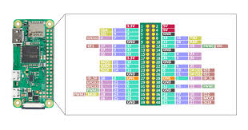
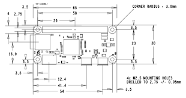

Raspberry pi 0 model W
Raspberry Pi 0 Model W, Raspberry Pi Vakfı tarafından İngiltere'de geliştirilen kredi kartı boyutunda tek kartlı bir bilgisayardır. 2016 yılında piyasaya sürülmesi, temel görevler için gerçek anlamda "masaüstü sınıfı" performans sunan ilk model olması nedeniyle seride önemli bir dönüm noktası oldu.
![[Arduino 101 kartının resmi]](../imgRaspberry0W/1.jpg)
---
---
---

Burada Raspberry pi 1 model B için teknik özellikleri bulacaksınız
Özellikler
İsim
Raspberry pi 1 model B
Çift Çekirdekli Mimari
• 512 KB Flash Hafıza.
• 80 KB RAM.
• 16 KB Gerçek EEPROM.
Dahili Çevre Birimleri (Bağlantı)
• CAN Bus: Otomotiv ve endüstriyel iletişim için gereklidir.
• SDIO: MicroSD kartları okumak için yüksek hızlı arayüz.
• DAC'ler (Dijital-Analog Dönüştürücüler): Ses sinyalleri üretmek için.
• STM32CubeIDE: ST'nin resmi ücretsiz yazılımı. C/C++ ve HAL (Donanım Soyutlama Katmanı) kütüphanesini kullanır.
• MicroPython: F4 bol miktarda RAM'e sahip olduğundan, hızlı prototipleme için Python komut dosyalarını çok iyi çalıştırır.
• Arduino IDE: Çekirdek yapısı ile, bunu tıpkı bir Arduino gibi programlayabilirsiniz.
Projeniz şunları içeriyorsa bunu kullanın:
• Ses: Ses filtreleme, sentezleme veya kayıt.
• Uçuş Kontrolü: Dronlar (Quadcopterler), F4'ün hızlı kayan nokta matematiğini gerektirir.
• Ekranlar: Renkli TFT ekranları sürme.
• Yüksek Hızlı Örnekleme: Sensörleri 100kHz'den daha hızlı okuma.